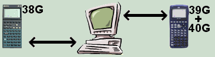

The HPGComm software is used to transfer files between a PC running Windows 95 or higher, and an HP 38G, HP39G or HP40G graphing calculator. The HPGComm software runs on the PC. You control the sending and receiving of files from your calculator. See How HPGComm works for details.
HPGComm can be used for:
You can send an image of the calculator screen to a PC. This can be useful when you need to include graphs in documents.
Any of the views on the calculator which include a SEND or RECV option can transmit to or receive from a PC using this software.
In particular, you can load calculator aplets and programs that you get from sources such as:
See also
Initializing a directory on your PC
Transferring objects from the PC
Transferring objects from the calculator